Karen Berg, Vice President of Operations and Business Strategy at Contoso, begins her day at one of Contoso’s largest retail stores, where she has a quarterly touch-base meeting with the store manager.
As her early morning meeting is wrapping up, the store manager mentions to Karen that they are receiving negative feedback regarding the upcoming launch of the M400 smartphone; their presales are down and the manager is concerned. Karen tells the manager she will look into it.
The meeting ends and Karen grabs her Windows Phone 8.1. She swipes down to review the Action Center. Here, she can see new emails she missed while she was in the meeting as well as reminders for what's coming up on her schedule.
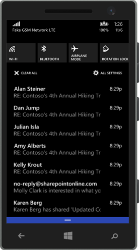
The Action Center can also be customized to show Karen traffic alerts, updates from her social media accounts, the next local sporting event, and breaking news. It also provides easy access to four personalized quick actions, like Wi-Fi, Airplane mode and more.
She sees she has some time before her next meeting, so she decides to head to a nearby coffee shop to get some work done before heading into the office. She is especially eager to record her thoughts from her meeting with the store manager regarding the M400 before she forgets.
As Karen leaves the store, she taps the magnifying glass icon on her phone to ask Cortana for directions to the nearest coffee shop. Cortana is Karen’s virtual personal assistant on her Windows Phone 8.1. Powered by Bing, Cortana is able to find the information Karen needs now while it gets to know her preferences and interests to better predict her requests in the future.
Cortana gives Karen a list of options and she taps Directions on the first one.
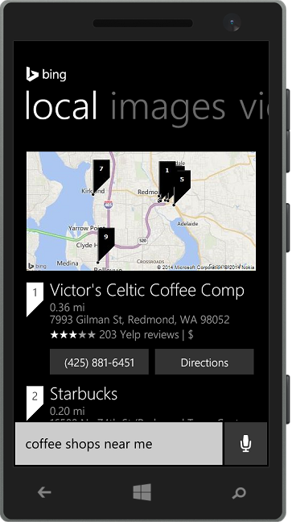
Cortana opens up directions to the coffee shop in the Maps app on Karen's phone. Karen can see it is only a short cab ride away so she hails a taxi and directs the driver to the coffee shop’s address.
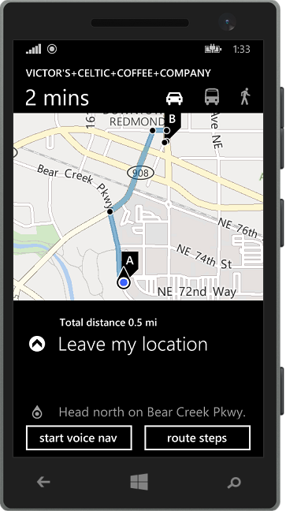
On the way to the coffee shop, Karen asks Cortana to remind her to send the store manager a thank-you email before she leaves the office at 5 p.m. today. Cortana creates the reminder, which will help Karen maintain her positive relationship with the store manager.
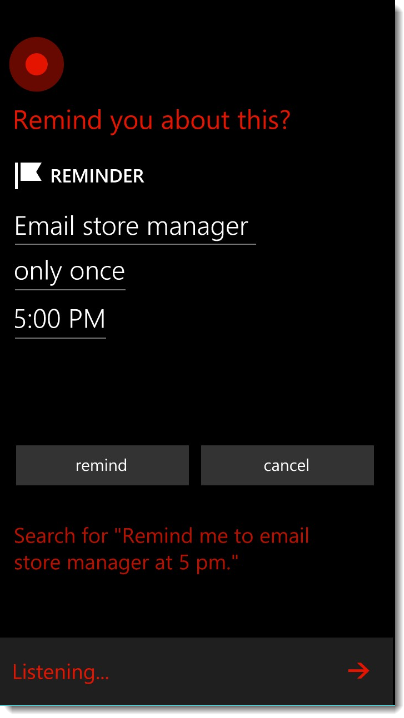
While she’s in the cab, Karen decides to use the downtime to review her email on her phone. Her Windows Phone 8.1 allows her to stay productive and socially connected even when she's not in the office. On the lock screen, Karen is able to get high-level information such as date, time, weather, etc.
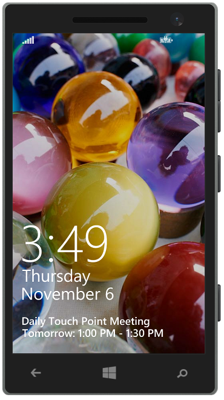
Karen swipes up to enter the Start screen.
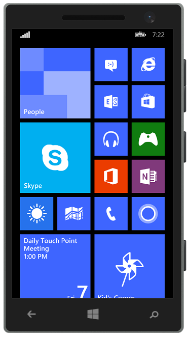
Here, she sees multiple Live Tiles that display the information that is most important to her. They continuously update her information, including the number of emails she missed while she was meeting with the store manager and the next meeting on her calendar.
Many of the tiles represent different Hubs that contain and categorize important information. Hubs are places where you can access a set of your related content and experiences. This is a unique feature to Windows Phones that weaves together applications, services and content in a way that makes sense, making everyday tasks easier, with fewer steps.
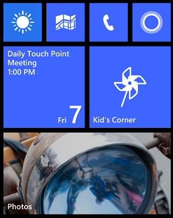
Before reading her emails, Karen resizes the Outlook tile to make it more prominent on her phone. She taps and holds the tile until the arrow in the lower-right corner appears. She then taps the arrow to expand.
Now, she'll be able to see the most information possible without actually opening her inbox. Karen then taps the Outlook tile.
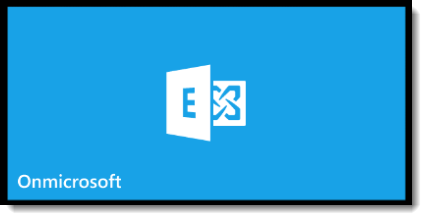
Karen is particularly interested in messages that are marked as urgent, so from her main inbox, she swipes right to filter to urgent emails only.
She taps an email marked with high importance titled Needs Review: Final Presentation from Vice President of Sales Operations Julian Isla.
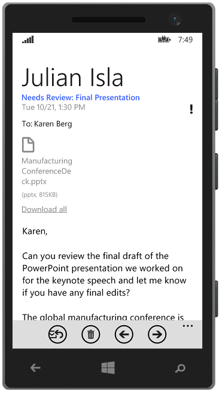
In the email, Julian asks Karen to review the final draft of a PowerPoint presentation they worked on together for their keynote speech at an upcoming global manufacturing conference. The slide deck is due to the conference organizers this morning and Julian wants to know if Karen has any final edits to the presentation.
Karen opens the PowerPoint attachment on her phone and is able to review the entire presentation, including transitions, during her cab ride to the coffee shop.
Karen taps respond, then reply on the email and types her approval:
Looks great! Thank you, Julian!
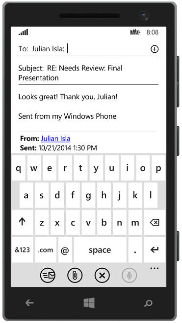
Thanks to the new Word Flow keyboard on Karen’s Windows Phone 8.1, typing is easier than ever. Intuitive shape writing saves users time and effort, making communicating on-the-go a breeze.
After tapping the send icon, Karen then taps on the ellipsis, taps move and moves the email into a folder titled Conferences for future reference.
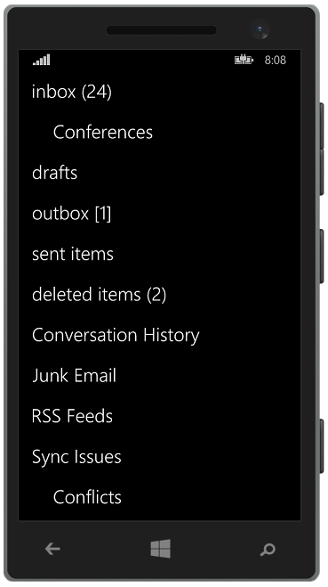
Next, Karen sees an urgent email from her boss, COO Ty Carlson, about a meeting he is having with Contoso’s attorneys regarding a patent-violation case that has been filed by a competitor. He would like Karen to attend the meeting and suggests that she review any past or related litigation reports she can find in the eDiscovery Center.
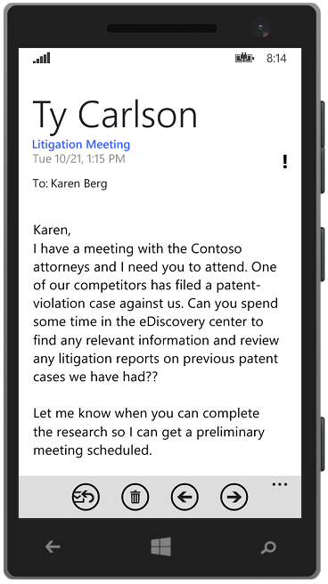
She taps the ellipsis, then taps the toggle flag for follow-up. The message flag she sets from her phone will now sync (via Active Sync) to the Outlook client in her office as well as Outlook on the web, so she can follow up from her office or anywhere else.
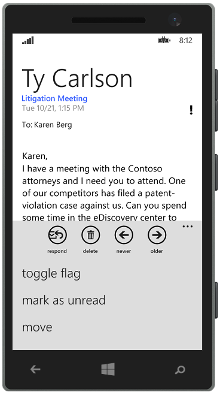
If Karen needs to flag multiple messages, she can do so by selecting the checkbox to the left of each message she wants to flag, then using the set flag option for all selected messages.
With all of her important emails reviewed, Karen arrives at the coffee shop, places her order and finds a table to continue working.
|
|
Facilitation Tip:
This section is optimized for Windows Phone 8.1. Be cognizant of the fact that not all features are available on Windows Phone 8 if one needs to be used in place of a Windows Phone 8.1.
Facilitation Tip:
Contoso could implement Windows Intune, which would allow Karen to stay productive and work securely downloading the programs she needs to the device of her choice. Additionally, Contoso would be able to ensure her device is up-to-date and add or remove programs from her device as needed.
Facilitation Tip:
If Karen were running late to a meeting, she would be able to send an “I’ll be late” message with just a few taps. Simply tap on an appointment in the calendar and swipe right to view the meeting attendees. Directly from the attendees screen, tap on the Late icon. To send an email message to everyone attending the meeting, tap email everyone and Windows Phone will prepopulate the message. Just tap send.
Facilitation Tip:
Cortana can help you keep track of traffic during your commute by learning the locations of your work and home and providing up-to-date notifications via Bing Maps. Cortana can alert you to traffic tie-ups before you head in to work or leave the office for the evening, giving you time to contact coworkers and family or take a different route.
Facilitation Tip:
With Cortana, users can set location-, time- and person-based reminders to help them remember their to-do's at specific locations and times or when they send or receive calls, texts or emails to/from certain people.
Competitive Advantage:
Competitive mobile offerings have limited ability to display ‘live’ information. Most can show email or message counts, but they aren’t set up to display app info like a Live Tile.
Facilitation Tip:
Everyone customizes his or her Windows Phone 8.1 differently. There are some limitations with content on the Windows Phone that are connected to the CIE environment. If you have one, think about the features on your personal Windows Phone that may be worthwhile to point out to the participants.
|